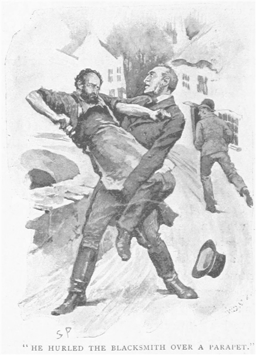
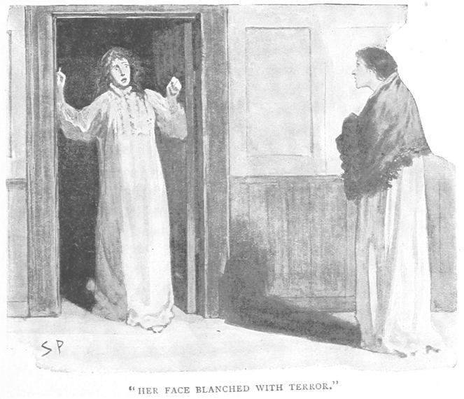
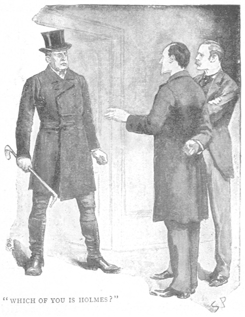
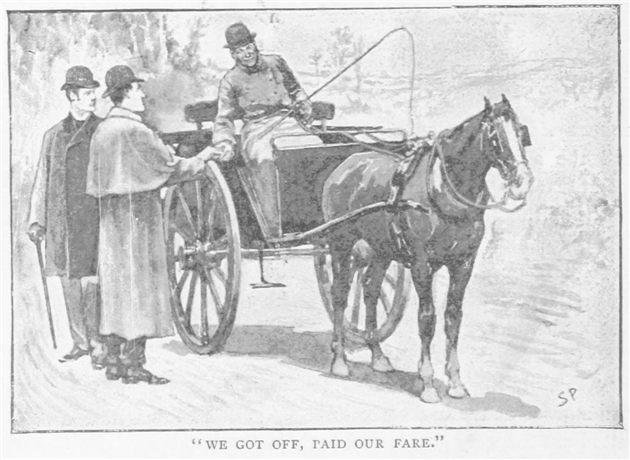
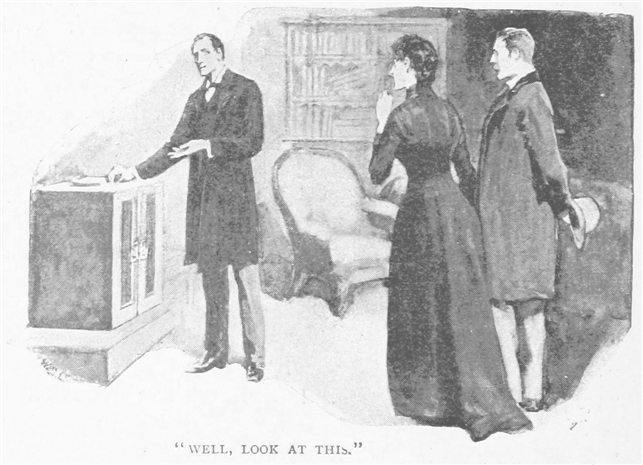
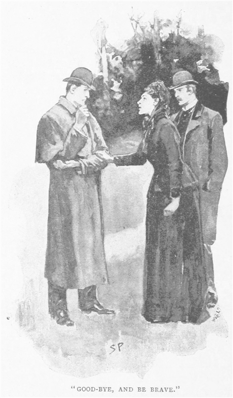
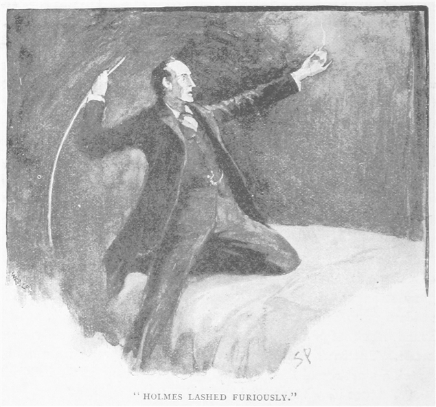
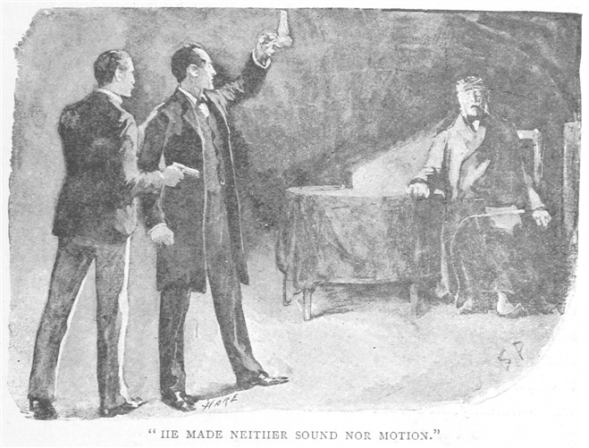

ふと私の覚え書きを見ると、七〇もの不思議な事件がある。この八年間、事件を通じて友人シャーロック・ホームズの手際を考えてきた。その中には多くの悲劇と少しの喜劇があり、あとの大半は単に変わっただけのものだったが、普通というものはひとつとしてない。なぜなら、どちらかというとホームズは好きだから仕事を受けるのであり、お金を得るためではない。何の変哲もない調査は、かかわりたくないと一蹴してしまう。途方もない事件でなくてはならない。そのような様々の事件のなかでも、これほどに奇怪きわまるものは他にないだろう。サリィ州ストーク・モランに住む、かの有名なロイロット家の話である。くだんの事件は、ホームズと付き合い始めて間もない頃に起こり、まだ我々はベイカー街で下宿を共用していた。もっと早くに公表してもよかったのかもしれないが、当時は口外しない約束をしており、こうして私が自由になったのは、ちょうど先日、約束を交わしていたご婦人が、時ならぬ死を迎えたためだ。私にできることはおそらく、すべての事実を白日の下にさらすことである。それには理由がある。グリムズビ・ロイロット博士の死について風聞が広がっていることを私は知った。そして、そのいずれもが真実をおどろおどろしくねじ曲げていたからである。
八三年の四月初め、ある朝、私が目を覚ますと、シャーロック・ホームズが身支度を調え、枕元に立っていた。普段は遅くまで眠っている男なのに、暖炉の上の置き時計によれば、まだ七時一五分を回ったばかり。私は何ごとかと目をぱちくりさせながらホームズの方を向く。おそらく少々機嫌も悪かった。私の朝は、決まってこうなのだった。
「気の毒だが起きたまえ、ワトソン。」ホームズの声だ。「今朝はみな同じ具合なのだ。ハドソンさんが戸の音でたたき起こされ、僕のところへやってくる。そして僕は君のところへ。」
「何かね、まさか――火事か？」
「いや、依頼人だ。年の若いご婦人が興奮気味に来られたらしく、僕に面会したい、と。居間で待ってもらっている。どうだね、若いご婦人がこんな朝早く都会をほっつき歩いて、眠り込んでいる他人をたたき起こすとなれば、よくよく差し迫った事情があると考えねばならぬ。万一これが本当に面白い事件だとすれば、君はきっと、はじめからかかわりたがる。いずれにせよ、声をかけるだけかけて、君に決めてもらわねば。」
「心の友よ、どんな事件も逃すものか。」
私にとって、ホームズの調査に立ち会うことほど、深い楽しみを感じるものはなかった。あの迅速な推理に驚くのもよい。早すぎて当てずっぽうにも思えるが、その実いつも論拠があり、結果、持ち込まれた問題を解き明かしてしまう。私は大急ぎで服をつけ、それから二、三分ののちには我が友と一緒に居間へ入った。と、黒い服に身を包み、顔には厚い
「おはようございます。」ホームズは朗らかに挨拶した。「僕がシャーロック・ホームズです。こちらは私の友人で助手のワトソン博士。僕同様に、何をお話になっても結構です。おっと、ハドソンさんが気を利かせて暖炉に火をつけてくれたようですね。どうぞ火の方へ。熱いコーヒーはいかがですか？ ふるえていらっしゃる。」
「寒くてふるえているのではございません。」と女性は言われるままに椅子を寄せながら、低い声で言った。
「ほう。すると？」

「こわいんです、ホームズさん。おそろしくて。」と言って、依頼人は
「ご安心を。」ホームズはやさしく言葉をかけて身を乗り出し、依頼人の腕に手を置いた。「僕らがすぐ解決して差し上げます、ですから。今朝の汽車でお着きになった、のですね？」
「申しましたかしら？」
「いえ、ただ左の手袋のあいだに復路の切符が見えましたので。朝早くご出立になり、二輪馬車にお乗りになって、ぬかるんだ道を通り、駅までいらっしゃった。」
依頼人ははっとして、我が友人を不思議という目で見つめた。
「不思議なことではありません。」とホームズはほほえむ。「上着の左袖に七つも泥の跳ねがございます。しかもまだついたばかりの。そういうところへ泥を揚げる乗り物と言えば二輪馬車だけで、なお御者の左側に腰を下ろした場合に限られます。」
「説明はわかりませんが、おっしゃる通りです。わたくしは今朝六時に家を出まして、二〇分にレザヘッド駅へ着き、それからウォータルー行きの始発に乗ってまいりました。わたくしは、わたくしはもうこれ以上耐えられません。このままではおかしくなりそうです。頼れる人がおりません……誰も。ただひとり、心配してくれる者もありますが、あいにく、力になれないのです。そこでホームズさんのことを思い出して。ファリントッシュさんからうかがって、助けていただいたことがあると。この住所を教えていただいたんです。どうかわたくしをお助けください。いえ、せめて、今わたくしを取り巻いている深い闇に、少しの光を……。今のわたくしではお礼も十分には致しかねますが、あとひと月ふた月のあいだに結婚して、お金を自由にできるようになりますので、そうすれば相応のお礼もできるかと思います。」
ホームズは自分の机のところへ行き、錠を外して、取り出した小さな事件簿をめくった。
「ファリントッシュ……そうか、思い出した。オパールの髪飾
「ああ！」と依頼人が話し始める。「今のわたくしにとって最も恐ろしいことは、この恐怖が何のためかわからないことでして、まったく些細なことが気になるのです。他人から見ればつまらないことかもしれません。本来頼りにすべきあの方でさえ、神経質な女のたわ言だと考えるくらいなのですから。口には出しませんが、なだめたり、目をそらしたり、わたくしにもわかります。しかし、ホームズさん、あなたは人間の心に潜む悪意なら、どんなものでも見抜かれるとか。ですから、わたくしに近づく危険をどう避ければよいのか教えてくださると思って……」
「傾聴致します。」
「わたくしは、ヘレン・ストーナと申します。ただいま義理の父親のロイロット博士と一緒に住んでおります。ロイロット家は、イングランドでも古いサクソンの家系の末裔で、サリィ州の西の果て、ストーク・モランにございます。」
ホームズはうなずいた。「その名は存じております。」
「一時は、一族も裕福でありました。地所は、北はバークシア、西はハンプシアまで広がっておりました。しかし一八世紀、四代にわたり当主たちが放埒をして財産を使い果たし、結果として、摂政時代には賭博で一族は身を崩してしまいました。ただ数エーカーの土地と、築二〇〇年にもなる屋敷だけは残りましたが、それも抵当に入っている始末でございます。先代はそれでも無為な人生を送り、清貧に甘んじたとか。けれどもそのひとり息子、つまりこれが義理の父なのですが、そこから抜け出ようと思ったらしく、親類から学資を立て替えてもらい、どうにか医者の学位を取りました。それからインドのカルカッタへ参りまして、そこで、技術と持ち前の性格もあってか、医院を開業致しました。あるとき、家内で窃盗事件が立て続けに起こりまして、かんしゃくを起こし、現地で雇った執事を殴り殺してしまったそうです。死刑はすんでのところで免れたようです。もっとも、長い禁固刑に苦しめられたせいか、その後、内地へ戻ってからは、すれた気むずかしい人になってしまいました。
そのロイロット博士とわたくしの母が結婚したのは、インドにいた頃で、当時わたくしの母は、ベンガル砲兵隊にいたストーナ少将の若き未亡人でした。わたくしと、姉のジュリアは双子で、再婚したときはまだ二歳の赤ん坊でございました。母はかなりの金持ちでございまして、一年に一〇〇〇ポンド以上の収入がございましたが、その金はそっくりロイロット博士に遺言で譲ってしまいました。もっともそれは、わたくしども姉妹が、継父と一緒に暮らしているあいだのことだけで、もしわたくしどもが結婚いたしますと、それから後はわたくしどもにも毎年ある決まった金額の金を分けてくれる決まりになっているのでございます。母は内地に帰ってまもなく亡くなりました。八年前、クルーの近くで鉄道事故に遭ったのです。母亡き後の父は、ロンドンで開業するつもりであったのをよして、わたくしどもを連れ、ストーク・モランにある一族代々の屋敷へ戻って住むことになりました。母の遺産がありますことゆえ、生活には何不自由なく、よそ様がご覧になれば、わたくしどもはまことに結構な身分のように見えたことでございましょう。」
「ところがこの頃から、にわかに父の様子が変わってまいりました。人と付き合うことを極端に嫌いまして、ストーク・モランのロイロットが代々の地所に戻ってきたと村人が喜ぶにもかかわらず、家の中に閉じこもってばかりいました。たまに外出いたしますと、道で会った村人と相手かまわずの喧嘩をするのです。もともとロイロット家の者は気の荒い血筋を引いているのですが、父の場合は、その血筋の上に熱帯での長い生活が重なって、いっそうひどいのでございました。警察沙汰になった事件も二度や三度ではございません。村の人々はすっかりおびえてしまい、しまいには父の姿を見ると、誰も皆あわてて逃げるようにさえなってしまいました。何しろ父と来たら恐ろしく力の強い人で、怒ったとなると全く手がつけられなくなるのでございます。

つい先週も、父は村の鍛冶屋さんを橋の欄干から川の中へ突き落としてしまいました。訴え出るというのを、かき集めたお金を出してやっと勘弁していただいたほどでございます。父のお友だちといっては、漂泊のロマの一団だけで、ロイロット家の地所として残っているわずか数エーカーほどの茨の茂った土地で、野宿してよいと言ってあるそうです。その交換条件として、父はいつでもそこでの寝泊まりを許されていますので、時によると父は同行して何週間も処々方々を回ることさえございました。また父は、インド産の動物が好きで、現地からよく動物を買い入れております。現にただいまも、屋敷には豹が一頭とヒヒが一頭、いずれも放し飼いになっておりまして、いっそう村人を怖がらせる原因にもなっております。
このお話で、かわいそうな姉ジュリアとわたくしとの暮らしが、今まで決して楽しいものでなかったことはおわかりになったと存じます。屋敷にはひとりの召使いさえおりませんので、長い間、家のことはわたくしども姉妹の手ですべて看てまいりました。姉の享年はまだ三〇でしたのに、その髪は白髪がちらほらと、ただいまのわたくしと同じように。」
「お姉さまはお亡くなりに？」
「ちょうど二年前に。実はお話ししたいのも、この姉の死についてでございます。ご想像つくかと存じますが、このような暮らしですので、同世代同身分の人とはなかなか付き合いが難しく。けれども、母の妹に当たるホノーリア・ウェストファイルという叔母がハロウの近くに住んでおりまして、父もここを訪ねることだけは許してくださいます。ジュリアは二年前のクリスマスにそこへ参りまして、休職中の海軍少佐の方と出会い、婚約の運びとなったのでございます。父はこの婚約を知っても別段何も文句を申しませんでしたが、式の日取りの二週間前に、あの恐ろしい事件のために、わたくしはたったひとりの姉を失ってしまったのです。」
シャーロック・ホームズはずっと目を閉じ、椅子の背に頭を押しつけていたが、このとき細目を開けて、依頼人の方をちらりと見た。
「願わくは、詳しいお話を。」
「隅々までお話し致します。あまりの恐ろしさに、今もわたくしの記憶にはっきりと焼き付いております。わたくしどもの屋敷は、申しあげましたようにたいへん古く、ただいま使っておりますのは一棟だけでございます。寝室は一階にございまして、中程に居間がございます。一番目がロイロットさんの寝室、その隣が姉、次がわたくしのになっております。寝室同士は行き来ができませんが、各部屋の入り口は同じ廊下に並んでおります。こんな説明でよろしいでしょうか？」
「問題ありません。」
「寝室の窓からは庭の芝地が見えます。事件当夜は、ロイロットさんは早くから寝室へ下がりましたが、おそらくお休みになったのではないと思います。姉によれば、父がいつも吸うインド煙草のきつい臭いにひどく悩まされたと。ですので、姉は自室を出て、隣のわたくしの部屋へ参りました。しばらくわたくしどもは、すぐ先に迫った姉の婚礼の話をしておりました。十一時に姉は帰るとて立ち上がりましたが、ふと戸口のところで立ち止まり、振り返ってこんなことを申しました。
『ねえ、ヘレン。あなた真夜中に、誰かが口笛を吹いているのを聞かない？』
『いいえ、何も。』
『まさか、あなたが眠りながら口笛を吹くわけでもないでしょうし。』
『当たり前じゃないの。どうして？』
『だってこの頃、毎晩のように、真夜中の三時頃かしら、低い口笛が聞こえてね。いつも眠りが浅いから、音が聞こえると目が覚めちゃって。どこで吹いてるのか分からないんだけど……隣の部屋か、ひょっとすると芝地の方か、一度あなたに聞かなくちゃと思ってたの。』
『聞かないけど、あたりにいるロマの仕業じゃない？』
『そうかもしれない。でも、芝地で吹くんだとすると、あなたの耳にも聞こえそうなものね。』
『でも、あたし、姉さんと違って、安眠しちゃうから。』
『まあ、何にせよくだらないことね。』と、姉は笑って、わたくしの部屋の戸を閉めました。そしてそれにつづいて姉が自室の鍵をかける音が聞こえました。」
「なるほど。」とホームズが答える。「毎晩、部屋に鍵をかけるのですか？」
「はい、いつも。」
「どうして？」
「父が豹とヒヒを飼っていることは申しましたね、鍵をかけないことには、安心して眠れないので。」
「無論です。どうぞ先をお話ください。」
「その夜は眠れませんでした。何だか胸騒ぎがして。前にも申しましたが、姉とわたくしとは双子でございました。ご存じかと思いますが、強い

「では、ひとつ。」とホームズが口を挟む。「口笛と金属音というのは確かですか？ 聞き間違いでもない？」
「そのことは検視のとき係官からもお訊ねがありましたが、わたくしは確かに聞いたと、そう思うのです。もっとも、激しい嵐で古い家が絶えず軋んでおりましたから、ひょっとすると、聞き違えたのかもしれません。」
「お姉さまの服は？」
「寝間着のままでございました。右手にはマッチの燃えさしを一本、左手にはマッチの箱を。」
「するとお姉さまは、何かを察知して、マッチを擦って辺りをご覧になった。なるほど。それで検視官は、どのようなご結論を？」
「ずいぶん詳しい取り調べをなさいました。父の日頃の行いがあまりにも悪かったものですから。けれど、姉の死因について、はっきりとしたことは分からずじまいでした。内側から鍵がかかっていたことは、わたくしが証言致しましたし、窓には旧式の鎧戸がついていて、夜にはいつも太い鉄の棒をはめて閉ざしております。四方の壁も全部叩いてみましたが、どこもしっかり堅いとしか分かりませんでした。床もつぶさに調べましたが、同じことでした。煙突は太いのですが、内部に釘が四本も横に通してあります。ですから、亡くなったとき姉ひとりだったことには間違いございません。それに姉の身体には傷痕ひとつ見つからないのです。」
「毒殺については？」
「お医者さまがお調べになりましたが、結果は何も。」
「では、お気の毒なお姉さまは何の原因で亡くなったのだと？」
「姉は激しい恐怖のために、びっくりして、それで死んだのだと思います。もっとも、何が姉を驚かせたのかは分かりません……」
「ロマは、そのとき、敷地の中にいたのですか？」
「はい、だいたいいつも、どこかにおります。」
「ふむ。――それから何かお心当たりはありますか？ ひも……まだらのひも、に。」
「姉が夢中に叫んだうわ言かとも思い、またそれは敷地にいるロマのことではないかとも思い……多くの者が頭に水玉の模様があるハンカチーフを巻いておりますが、それが姉の使った言葉に関係があるのかは、ちょっと。」
ホームズもよく分からないという風に、首を横に振る。
「まさに深い海、ですね。どうぞ先をお話ください。」
「事件から向こう二年間、先頃までさみしく暮らしてまいりました。けれども、一ヶ月前、長年の友人のおかげで、わたくしにも結婚を申し込む方が現れました。お名前はアーミティッジ――パーシィ・アーミティッジ――アーミティッジ家の次男で、レディングのそばのクレイン・ウォータにお住みです。父も反対致しませんので、春のうちに式を挙げる予定です。ところが昨日から屋敷で西棟の修理が始まり、わたくしの寝室は壁に穴が開きましたので、やむを得ずわたくしは、亡くなった姉の部屋へ、姉の使っていた寝台へ移ることになりました。考えてみてください、昨夜のわたくしがどれだけ恐ろしくてふるえたことか。眠れずに姉の恐ろしい最期が頭から離れずにいると、真夜中の静けさの中に、姉の死の先触れとなりましたあの低い口笛が聞こえたのでございます。わたくしは飛び起きてランプをつけましたが、部屋には何も見あたりません。でも、もう恐ろしくて寝台にも戻れず、そこで着替えて、夜明けが来ると家を抜け出し、お向かいのクラウン・インという旅館で二輪馬車を頼みまして、レザヘッド駅へ駆けつけ、それからこうして今朝、こちらへお助けをお願いに参ったのでございます。」
「賢明な行動です。お話はそれですべて？」
「ええ。」
「お嬢さん、まだあります。父親のことをお隠しです。」
「どういうことでしょうか？」
返事の代わりに、ホームズは依頼人の膝に置かれていた腕を取り、黒いレースの袖口をつまんで折り返した。五つの小さな
「ひどい扱いを受けていらっしゃる。」ホームズが言った。
ご婦人は顔を赤らめ、痣のついた手首を袖の下に隠した。
「すぐ手の出る人で、きっと力の加減がわからないのです。」
長い沈黙が続いた。ホームズは両手にあごを乗せ、暖炉に燃えさかる火の中をじっと見つめていたが、やがて、
「深い事情があるようで。」
と口を開いた。
「これからどう動くかを決める前に、知っておきたいことが山のようにありますが、一刻の猶予もありません。いかがですか、今日ストーク・モランへ出向いて、父親に知れないよう見せていただくのは。」
「折よく父も大事な用でロンドンへ出ると申しておりました。日中は留守にしているでしょうから、大丈夫でございましょう。家政婦がひとりおりますが、耄碌しているお婆さんですから、外へ出てもらうのは訳ないかと。」
「好都合です。君も出かけるのに異存はなかろう、ワトソン？」
「異議なし。」
「ではふたりで参ります。あなたはどうなさいますか？」
「せっかくロンドンへ参りましたので、これからひとつふたつ用を済ませたいと存じます。ですが十二時の汽車で帰りますので、先生方のご来訪には間に合うかと存じます。」
「ではお昼過ぎに、ふたりで伺います。私も二、三、片づけておきたいことがありますので。よろしければ、朝食などいかがですか？」
「いえ、おかまいなく。悩みを打ち明けまして、心が軽くなりました。午後お目にかかるのをお待ち致しております。」依頼人は黒い
「今の話をどう思うね、ワトソン？」シャーロック・ホームズが、椅子にもたれかかりながら訊ねる。
「ずいぶん暗く、悲惨な話だと思う。」
「暗く、悲惨……そうだね。」
「あのご婦人の言ったように、床にも壁にも異常がなく、戸も窓も煙突も通れないとすれば、その姉なる人が不可解な死を遂げたときに、たったひとりだったことは間違いないということになる。」
「では、真夜中の口笛は、ご婦人が死に際にもたらした不思議な言葉は、どうなる？」
「見当も付かんよ。」
「考え合わせてみよう。夜の口笛のこと。老医師と親密なロマたちの存在。娘の結婚を邪魔すれば、その医者が得をするというはっきりした事実。死に際の『ひも』という言葉の謎。それから最期にヘレン・ストーナの聞いた金属音（これは鎧戸の棒が元のところに戻った音かもしれぬが）。この方向で、謎を解き明かせそうだとは考えられないだろうか。」
「だがロマたちが何をしたと。」
「何だろうね。」
「そんな説明、いくらでも穴がある。」
「ごもっとも。だからこそ今日ストーク・モランまで行く価値があると思う。その穴が致命的なのかどうか、これで説明可能なのかどうか、確かめたい。おや、何ごとかね？」
突然、友人が声を張り上げたかと思うと、いきなり扉が勢いよく開いて、大男が入り口に立ちはだかった。男の服装は、学者と農園主のそれが変に混ざった風であった。黒いトップ・ハットに長いフロックコート、長いゲートルという格好で、手で狩猟鞭を振り回している。背が高く、帽子が入り口の鴨居すれすれで、肩幅もぎりぎりであった。その大きな顔は皺だらけで日に焼けていて、鬼のような形相で我々をひとりひとりにらみつけ、怒りに燃えるくぼんだ眼、肉の薄い高い鼻などは、凶暴な猛禽のようであった。

「どっちがホームズだ？」
「私の名前です。が、まずは名乗るべきでは？」友人は静かに問い返した。
「わしはストーク・モランのグリムズビ・ロイロットだ。」
「どうも、先生。」とホームズはおだやかに切り返す。「どうぞおかけください。」
「お断りだ。わしの義理の娘がさっきここへ来たな。入るのを見たぞ。お前に何をしゃべりやがった？」
「今年の寒さはたちが悪いようで。」ホームズは言った。
「何をしゃべりおったと聞いとるのだ。」老医師は烈火のごとく怒った。
「ですが麦の方は出来がいいそうで。」と友人は少しも動じない。
「この、はぐらかしおって！」闖入者は一歩踏みだし、鞭をふるわす。「このクソガキめが！ 知っとるぞ。ホームズ、貴様の職はお節介屋だとな！」
友人はにこりと笑った。
「出しゃばり屋！」
満面の笑みを浮かべる。
「このスコットランド・ヤードの子役人が！」
ついにホームズはくすくすと笑い出した。「その冗談、傑作です。お帰りの際は戸締まりをよろしく。すきま風が寒いので。」
「用が済めばこっちから帰ってやる。他人のことにあまり首をつっこむなよ。ストーナの娘が来たのは知っとる、つけてきたからな。わしを相手にすると後悔するぞ！ 見ろ。」老医師はつかつかと進むと、暖炉の火掻き棒をつかみ上げ、大きな手で折り曲げてみせた。
「せいぜいわしの手に気をつけるこったな。」老医師は吠えたあと、曲がった火掻き棒を暖炉の中へ放り込み、大手を振って部屋から出ていった。
「ずいぶん愛嬌のある人物だ。」と、ホームズは笑い出しながら、「僕も身体は大きくないが、待っていれば決して彼より力は弱くないことを披露できたのだが。」そういって、鉄の火掻き棒を取り上げると、ぐいと力を入れて元の通りまっすぐに伸ばした。
「御仁、僕と警視庁の役人を混同するとは、なんたる暴挙！ だが今の出来事は、僕等の調査のいい薬味になる。あのお嬢さんが、あの獣に後をつけられたことで、困ったことにならねばよいのだが。さて、ワトソン、朝食と行こう。そのあとで僕は博士会館へ行ってくる。事件に役立つ資料が何かあると思う。」
シャーロック・ホームズが外から帰ってきたのは、一時頃だった。手に水色の紙を持っていて、数字や抜き書きがいっぱいに書き込まれていた。
「亡くなった細君の遺言状を見てきた。正確な内容を考えるために、関係する投下資本の現在価格を計算しなくてはならなかった。細君の死んだ当時、年収で一一〇〇ポンド弱もあったものが、今は農産物の価格下落で、せいぜい七五〇ポンドというところ。そして娘が結婚すると、ひとりにつき年収二五〇ポンドずつ受け取れるようになってある。それゆえに、もしふたりの娘が嫁いでしまえば、うま味が少しだけになってしまうわけだ。ひとりだけでも深刻なほどに損なわれる。今朝の仕事は無駄ではなかった。このようなことをしでかす最も有力な動機があると証明された。さあ、ワトソン、じっとしている場合ではない。とりわけあの老人は僕等が事の邪魔になると分かっている。準備次第、辻馬車を呼んでウォータルー駅へ急ごう。リヴォルヴァを懐に忍ばせてくれるとありがたい。エリィＮＯ．２なら、鉄の火掻き棒を折る紳士にもうまく対抗できる。それと歯ブラシ、それだけで足りるだろう。」
ウォータルー駅で運よくレザヘッド駅行きの汽車を捕まえ、そこから駅付きの宿屋で軽馬車を頼み、美しいサリィ州の田舎道を四、五マイルほど揺られていった。申し分のない天気で、日はうららか、空にはふわふわした雲。沿道の木々にも生け垣にも新緑の若葉が芽生え、空気は湿った土の香りを含んでいた。春のさわやかな希望と、我々の取り組む重い使命とのあいだに、私は妙な対比を感じずにいられなかった。我が友人は馬車の前席で腕組みをして、帽子を深くかぶり、あごを胸につけて、深い考えに沈んでいた。ところがふと身を起こすと、私の肩を叩き、牧場の彼方を指さした。
「あれを見たまえ。」
立木の多い庭園が緩やかな丘に沿って広がり、頂上は深い緑に覆われた森になっていた。その木々の間から、古屋敷の灰色の破風と高い屋根がのぞいていた。
「ストーク・モランか？」とホームズが訊ねると、
「そうでごぜえます。グリムズビ・ロイロット博士のお屋敷でがす。」と、御者が答えた。
「そこで普請をやっているとか。」とホームズ。「そこが行き先だ。」
「あすこが村で。」御者は左手奥の集落を指さした。「けども、お屋敷に行きなさるなら、そこの石段を上がって、畑の小道を行かっしゃるのが近道ですぜ。ほんら、あの娘っ子も歩いておりましょうがな。」
「その娘っ子、どうやらストーナさんだ。」ホームズは小手をかざして眺める。「結構。君の言うままが賢明のようだ。」

我々は馬車を降り、代金を払うと、馬車はレザヘッドの方へがたごとと引き返していった。
「この方がいい。」踏み越し段を上りながらホームズが言う。「建築技師やら、用事のある人間が来たのだと思うに相違ない。角も立たぬ。ごきげんよう、ストーナさん。お約束通り参りました。」
今朝の依頼人は駆け寄って挨拶した。顔にうれしさがにじみ出ている。
「たいへんお待ち申し上げました。」声を張り上げ、熱烈に握手をする。「ロイロット博士もロンドンへ出ましたから、夕方までめったに帰ってきません。」
「先生とは、もうお近づきの光栄をいただきました。」とホームズは言い、起こった事を手短に説明した。ストーナ嬢は終わりまで聞かぬうちに唇まで真っ青になった。
「なんということでしょう！ あとをつけられたのですね。」
「そのようで。」
「先読みされて、いつも籠の中の鳥。帰ってきたら、何と言われるか。」
「だが用心すべきは向こうの方です。もっと先を読む人間が自分を追っているのですから。とにかく今夜、鍵を閉めて彼を近づけぬこと。狼藉を働くようなら、ハロウの叔母さんのところまで送って差し上げます。さて、できるだけ時間を有効に使いましょう。見ておくべき部屋の方へご案内をお願いします。」
建物は、苔むした石造りで、地は灰色、中央部が一段と高くなっており、それから左右へ棟がそれぞれ翼状にのびていた。一方は窓の破れたところに板が打ち付けてあったり、屋根がへこんでいたりして、廃墟の体であった。中央部も手入れ不足であった。ただ右側の棟だけは、割合に新しく、窓に日よけもあれば、煙突からは青い煙がゆらゆら上っており、住居区であることが見て取れた。右側の棟の外れに足場がくんであり、石の壁が崩れていたが、我々が訪れたとき、職人の姿はどこにも見えなかった。ホームズは手入れの行き届いていない芝地をゆっくりと歩き回り、窓を外側からつぶさに調べた。
「見たところ、この端の部屋ががあなたがいつもお休みになる部屋、真ん中がお姉様の寝室、それから母屋に一番近いのがロイロット博士の部屋。」
「その通りです。今、わたくしはこの真ん中で休んでおりますが。」
「改修中は、ですね。ところであの端の壁、大急ぎで直すほどのものには見えませんが。」
「必要ないんです。わたくしを部屋から追い出す口実かと。」
「ほう、いわくありげで。この細い棟の反対側には廊下があって、三つの寝室が面している。廊下に向いた窓はありますね？」
「ええ、ごく小さいものが。狭いので、人の通り抜けはできません。」
「夜、寝室に鍵がかけてあれば、そちらからは忍び込めない。では、真ん中の部屋へお入りになって中から鎧戸を閉め、
ストーナ嬢は指示に従った。ホームズは開いた窓も念入りに調べてから、外から鎧戸を無理にこじ開けようと手を尽くした。が、うまくいかなかった。中の閂をはずそうとしても、ナイフの刃を差し込む隙間がない。そこで拡大鏡を出して
横にある小さな戸を押すと、三つの寝室が並ぶ白壁の廊下に出た。ホームズは三番目の部屋を見ずにすぐさま二番目の部屋、すなわち今ストーナ嬢が使い、彼女の姉が最期を遂げた部屋に向かった。質素な小さい部屋で、低い天井、大きい暖炉、いかにも田舎屋敷風である。隅には茶色の箪笥が置いてあり、もう一方の隅は白い上掛けをかぶせた寝台があり、窓の左側には化粧台があった。そのほか、小さな籐椅子二つを加えたのがこの部屋の家具のすべてであった。あと部屋の中央に高級なウィルトン絨毯が敷かれていた。床も壁もみんな虫の食った褐色の樫材で、古さと色あせを見てもこの建物ができて以来そのままのものに違いなかった。ホームズは椅子の一つを一方の隅に引いていって、しずかに腰を下ろすと、上下左右にぐるりと目をやり、部屋の隅々まで見回した。
「あの呼び鈴は、どこへ通じていますか。」ふと、ホームズは寝台のそばに垂れ下がっている太い綱を指さした。枕の上に房の先が乗っかっている。
「家政婦の部屋へ通じております。」
「他のものより真新しいようですが。」
「ええ、二年前につけたばかりです。」
「すると、お姉さまがつけさせた？」
「いえ、そのような話は。いつも自分のことは自分で致しますので。」
「では、こんな立派な引き綱など不必要でしょう。床を確認しますので、もうしばらくお待ちください。」ホームズは手に拡大鏡を持ち、頭を床に近づけた。床にはいつくばりながら前後に動いて、床板の隙間まで細かく調べた。それがすむと壁の木材を同じように調べつくした。そして寝台へ歩み寄り、しばらく見つめていたが、壁を上から下へ眺め回した。最後に呼び鈴の引き綱をつかんで、思い切り引っ張った。
「おや、飾りか。」
「鳴りませんか？」
「ええ、針金につながってもいない。実に面白い。ごらんなさい、引き綱は換気のための小さな穴の上のあたりで、かぎ針に結ばれて動かない。」
「訳がわかりません。今までちっとも気づきませんでした。」
「実に妙だ！」と、ホームズはつぶやき、綱を引っ張る。「この部屋には、奇妙な点がいくつかあります。たとえば、大工はいったい何を考えて、隣の部屋へ穴をあけるのか。通風口なら、外気が入るようにするはずです！」
「それも最近のものでございます。」
「引き綱と同じ頃ですか？」
「ええ、そのほかにも少し直したところがいくつもございます。」
「非常に興味深い特徴があるようです――飾りだけの引き綱、風の入らない通風口。よろしいですね、ストーナさん、もうひとつ内側の部屋を調べに参りましょう。」
グリムズビ・ロイロット博士の寝室は、娘たちの部屋より広かったが、家具は同様に質素なものだった。折りたたみのできる寝台、医学書ばかり詰まった木製の本棚、寝台のわきに肘掛椅子が一つ、壁に寄せて粗末な椅子が一つ、円卓が一つ、それから大きい金庫、これらが目にとまる主立ったものである。ホームズは歩き回って、それらをいちいち強い関心を持って調べていった。

「中には何が？」と、ホームズは金庫を軽く叩いた。
「個人的な書類です。」
「ほう、中をごらんに？」
「一度、何年か前に。中には書類がぎっしりと。」
「中に猫がいる、とか？」
「いえ、滅相もない！」
「しかし、ごらんなさい。」と、ホームズは金庫の上から牛乳の入った小皿を下ろしてみせた。
「でも、うちに猫はおりません。豹とヒヒはおりますけれど……」
「ええ、存じております。まあ、豹は大きな猫とも言えましょうが、まさかこんな小皿で満足するはずもない。考えることが一つ増えました。」それからホームズは木の椅子の前にしゃがんで、背の部分を念入りに調べた。
「感謝します。はっきりしてきました。」と、ホームズは立ち上がり、拡大鏡を懐にしまいながら、「おや、これは面妖な。」
ホームズの目をとらえたのは、寝台の角にかけてあった小さな犬鞭であった。ただしその鞭の先は、丸く輪にして結んであった。
「これをどう思うね、ワトソン？」
「ごく普通の鞭かね、なぜ輪になっているのだろう。」
「普通どころではない。まったく！ 世も末だ。知恵のある人間が悪事のために頭を使うとは、末恐ろしい。じゅうぶん見せていただきました、ストーナさん。よろしければ、芝地の方へ出ましょう。」
我が友人は今までにないほどきつく顔をしかめ、眉根を寄せた。それはちょうど事件の現場を離れたときだった。三人がうち連れだって芝地を何度も行ったり来たりしたが、ストーナ嬢も私も、ホームズの考えの邪魔をせぬように、ひとしきり終わるまで待った。
「お話があります、ストーナさん。」ホームズが言う。「どうあろうと、僕の言うとおりにすることです。」
「きっとそういたします。」
「事態は切迫しております。守っていただかなくては、命の保証はできません。」
「わたくしの身は、お委ねいたします。」
「まず第一に、僕ら二人は、あなたの部屋で夜を明かさねばなりません。」
ストーナ嬢も私も、驚きの目でホームズを見つめた。
「これは絶対です。説明します。あそこに見えるのは、村の宿屋ですね？」
「ええ、クラウンと申します。」
「結構。あそこからあなたのお部屋の窓が見えますね？」
「はっきりと。」
「父親が帰ってきたら、あなたは頭が痛いと言って、ご自分の部屋へ下がってください。それから父親が夜、部屋に引き取る音が聞こえたら、あなたは窓の鎧戸を開き、掛け金を外して、そこからランプで僕らに合図してください。そうしておいて、あなたは静かに必要なものを手にして部屋をお出になり、元使っておられた部屋へ。壁に穴が開いていますが、一晩なら何とか我慢していただけるかと。」
「え、ええ、大丈夫です。」
「あとは、僕らにお任せください。」
「その、どうなさるのですか？」
「僕らは、あなたの部屋で一夜を明かし、あなたがたを悩ました音の正体を突き止めます。」
「では、ホームズさん、すでに見当が付いていらっしゃるのですね。」ストーナ嬢は、ホームズの服の袖に手をかける。

「おそらくは。」
「でしたらお願いです。姉の死因は何でございましょう？」
「申し上げるより、確固とした証拠をつかむのが先です。」
「せめてわたくしの考えが合っているのかどうかを。姉は恐怖のあまり亡くなったのですか？」
「いや、違うでしょう。より判然とした原因があるかと。それではストーナさん、お暇いたします。ロイロット博士が帰ってきて、僕らがここにいると知れては台無しです。失礼します、気を強くお持ちに。言葉通りにしていただければ、迫りくる危険はすぐに取り除かれ、安心できるようになりますので。」
シャーロック・ホームズと私は、宿屋クラウン・インで、居間つきの寝室を難なく手配できた。我々は二階に陣取り、窓からはストーク・モランの領主館が、門から道、住居棟にいたるまで見通すことができた。夕暮れ時、グリムズビ・ロイロット博士が馬車で帰宅するのが見えた。御者の少年の小ささに比べて、その巨体は覆うようである。少年が重い鉄門を開けかねていると、博士の荒々しい怒鳴り声が聞こえ、怒って握り拳を振り回しているのも見えた。馬車が走り帰って数分の後、居間の一つにランプが灯され、木立を縫ってぱっと黄色い光が漏れだした。
「いいかい、ワトソン。」と、ホームズが言う。我々は暮れゆくなか、椅子に腰掛けていた。「今晩、君を連れてゆくか実はためらっている。危険が目に見えている。」
「私はお邪魔かね？」
「来てくれるとどんなに助かるか。」
「なら、行くで決まりだ。」
「実にありがたい。」
「危険と言うが、私はあの部屋で何か見逃したのだろうか？」
「いや。ただし僕は若干推理をした。見たものは君と変わりないと思う。」
「私が妙だと思ったのは、引き綱くらいだ。正直、何のためにあんなことをしたのか、見当も付かん。」
「通風口も見たね？」
「ああ。部屋のあいだに小さな穴があるのは不自然だとも思えんが。しかも小さくてネズミ一匹通れんよ。」
「ストーク・モランへ来る前から、通風口があるだろうと踏んでいた。」
「おいおいホームズ！」
「ああ、本気だ。思い出してみたまえ、お嬢さんの話では、姉がロイロット博士の煙草が匂うと。とすれば当然、二つの部屋が通じているはず、とすぐ分かる。かなり小さいものに違いない。さもなくば、検視官が調べたとき気づいていたはずだ。よって『通風口』という答えが導かれる。」
「だが、あれが何の害になる？」
「少なくとも時期が奇妙に一致している。通風口が作られ、引き綱がつるされ、寝台に寝ていた女性が亡くなる。何かに気が付かないか？」
「どんなつながりがあるんだね。」
「あの寝台に妙なところはなかったか？」
「別に。」
「床に金具で固定してある。そんな寝台どこにある？」
「どこにもない。」
「ご婦人は寝台を動かせなかった。いつも同じ位置関係だったんだ、通風口と綱に対して――そう、ただの綱と呼ぼう。引いても鳴らないのだから。」
「ホームズ。」と私は声を張る。「君の言わんとすることがおぼろげに分かってきた。我々は、その巧妙で恐るべき犯罪を瀬戸際で食い止めるというわけだな。」
「巧妙で恐ろしい……そうだね。医師が悪事を行えば、一流の犯罪者になる。パーマやプリチャドはその筆頭だ。今回の相手はその上を行くが、ワトソン、しかし僕らはそのさらに上を行く。ともかく、夜が終わるまで気は抜けない。せめてこの二、三時間は、静かにパイプでもくわえながら気分転換でもしよう。」
九時頃、木立から漏れていた明かりが消えて、ストーク・モランの方向は闇に包まれた。二時間が静かに過ぎ、そして時計が十一時を打つと同時に、ふと、正面右の方に、合図の明かりが灯された。
「合図か。」ホームズが立ち上がる。「真ん中の窓だ。」
出かけにホームズは宿の主人と言葉を交わし、これから知人を訪問するが都合によっては向こうに泊まるかもしれない、と告げた。しばらくすると暗い道に出て、冷たい風がさっと頬をなでる。前方の闇の中には、黄色い灯が木立を抜けて、我々を不気味な使命へと導く。
庭の塀が崩れていたので、難なく敷地の中へ入れた。木々のあいだをかいくぐると芝地に出た。通り過ぎて窓から中へ入ろうとしたとき、突然、月桂樹の茂みの中からおぞましい怪物のようなものが飛び出し、草の上を転がった後、そのまま芝地を通り過ぎて闇の中へ駆け込んでしまった。
「なんと！」私は息を呑む。「見たか今の？」
ホームズもそのときは動揺したらしく、私の手をぎゅっと握りしめたが、すぐと忍び笑いをはじめて、私に耳打ちした。
「結構な家族だ。」とホームズはつぶやく。「ヒヒだよ。」
博士のかわいがっていた奇妙なペットのことをど忘れしていた。豹もいる。ひょっとすると、次の瞬間にはそいつが肩にかみついているかもしれないのだ。ホームズの真似をして靴を脱ぎ、窓から寝室へ入り込んだとき、正直ほっとした。我が友人は音を立てぬよう鎧戸を閉め、ランプを卓上に移して、部屋の中を見渡した。昼間見たときと変わりはない。それからホームズは私のそばへ忍び寄り、両手でトランペットをこしらえ、私の耳にやっと聞こえるほどの小さい声でささやいた。
「かすかな物音が計画を台無しにする。」
分かったと私はうなずく。
「明かりを消して、じっとする。通風口から漏れて、さとられるおそれが。」
もう一度うなずく。
「眠るのもなしだ。君の命に関わる。いつでも使えるよう君の拳銃も準備を。僕は寝台のへりに座るから、君はそっちの椅子へ。」
私はリヴォルヴァを出して、机の隅にそっと置いた。
ホームズは持ってきた細く長い杖を寝台に立てかけた。そのそばにマッチの箱と燃えさしの蝋燭を並べた。それからランプの明かりを消し、我々は闇に包まれた。
眠ることなく過ごしたあの夜のことを、終生忘れることはない。息を殺すと、音一つない。我が友人は数歩先で目を見開き、座っているはずなのに。私と同じように気を張りつめているはずなのに。鎧戸が、ほんのわずかな光さえも遮り、我々は絶対の闇に待つ。外から
ふと通風口の方から、一瞬だけ光が漏れ、すぐ消える。続いて油が燃え、金属が熱せられるきつい匂い。誰か隣の部屋で手提げ

「見たか、ワトソン！」ホームズが叫ぶ。「見たか？」
私には見えなかった。ホームズがマッチを擦った瞬間に、低く澄んだ口笛は耳にした。だが闇になれた私の目は、突然の光のまぶしさに、ホームズが何を打ち据えるのか見定めることができなかった。ただ見えたのは、ひどく青ざめ、恐怖と嫌悪にゆがんだホームズの顔だけだ。
ホームズは打つのをやめ、じっと通風口の方を見上げていた。そのとき、夜の静けさを破って、この世のものと思えぬ悲鳴が聞こえてきた。その悲鳴は徐々に大きくなり、しゃがれ声のなかに、苦しみと恐れと怒りが入り交じり、ついに断末魔の叫びとなる。聞いた話では、村を通り越して遠くの牧師館まで聞こえ、人々の眠りを覚ましたという。我々も肝を冷やし、私はホームズの顔を、ホームズは私を見つめたまま立ちすくんだ。やがて声も消え入り、あたりは元の静けさに戻った。
「何だ、今のは。」私は息を呑んだ。
「すべてが終わった知らせだ。」とホームズが答える。「そう、この結末が最善なのかもしれぬ。拳銃を持ちたまえ。ロイロット博士の部屋へ行ってみよう。」
深刻な面持ちでランプをつけ、ホームズは先に立って廊下を進んだ。部屋の扉を二度叩いたが、中からは何の返事もなかった。取っ手を回して、ホームズは中へ入る。私も後に続いた、引き金に指をかけつつ。
私は異様な光景に目を奪われた。卓上には、半分窓を開けた

「ひも！ まだらのひも！」と、ホームズはささやいた。
私は一歩前に出た。と、博士の頭を巻いていたあやかしが動き始め、髪の毛の中からずんぐりと太い菱形の頭を持った忌まわしい蛇が、ぬっと鎌首をもたげたではないか。
「毒沼蛇！」ホームズが声を張る。「インドでもっとも恐るべき蛇。博士が噛まれて死ぬまで、たった十秒だ。暴力は我が身に返るが必然。策士は仕掛けた穴に自らはまる。この毒蛇を巣の中へ追い込もう。そしてストーナさんを安全な場所へ移し、地元の警察へ事の次第を報告だ。」
言い終わるやホームズは死人の膝から素早く鞭をとり、その鞭の先の輪を毒蛇の首にかけ凶行の場から引き離すと、蛇を腕いっぱいに伸ばして運び、鉄製の金庫の中へ投げ入れ閉じこめた。
以上がストーク・モランのグリムズビ・ロイロット博士の死の真相である。ここまでの話が長くなったので、その後のことは簡単に話そう。我々はふるえるご婦人に悲劇を告げ、早朝の汽車でハロウにいる善良な叔母の元へ送り届けた。警察の調べには時間がかかったが、危険なペットの取り扱いを誤ったための事故死と結論づけられた。まだ腑に落ちない点はあったが、ホームズは私に、翌日の帰りの車中で教えてくれた。
「はじめ僕はまったく誤った推定を下していた。不十分なデータで推理を行うと危険だといういい一例だ。ロマがいた。『ひも』という言葉を哀れなご婦人が口走った。つまりそれは、マッチを擦ったとき、一瞬何かの姿を見たことを表している。だがそれがかえって僕を誤った方向へ追いやった。ただ幸いだったと言えるのは、すぐ考え直せたことだ。部屋にいる人物をおびやかす危険が何であったにせよ、それは窓や扉から入ったものではないとはっきりしたのだから。前にも話したとおり、僕の注意はすぐさま通風口と寝台の上に垂れ下がる綱とに向けられた。それが飾りであること、寝台が床に固定されていることを知って、すぐにこの綱は何かが穴から寝台へ伝うための橋渡しをしているのではないか、という考えが浮かんだ。蛇の姿がさっと頭によぎる。博士がインドから動物を取り寄せていることを考え合わせると、信憑性が出てくる。毒物にも、どんな試験でも検出されないものがある。それを使うとは、さすが東方で仕事をした男の悪知恵と言うべきか。しかもこの毒には即効性があり、この点でも都合がいい。毒牙の食い込んだところには、ごく小さな黒い傷がふたつ残るだけだから、目の利く検視官でないかぎり見逃して当然だ。それからあの口笛のことだ。無論、朝になって相手にばれてはいけないから、博士は蛇を呼び戻さねばならぬ。そこで訓練をした。あの牛乳でも使ったのか、呼べば戻るようにしたわけだ。頃合いを見計らって毒蛇をあの通風口へ向かわせ、蛇は綱を伝い寝台へ下りる。一度で噛むとは限らぬから、一週間のあいだは毎晩うまく避けられたのだろうが、遅かれ早かれ、その犠牲となるに違いない。
ここまでの結論には、博士の部屋へ入る前にたどり着いていた。椅子を調べると、上に博士がしばしば上がっていることが分かった。もちろん通風口に手を届かせるために必要だ。金庫、牛乳の皿、先を輪に結んである鞭、これらを見れば、もはや少しの疑問を残すところもない。ストーナさんの聞いた金属音は、博士が怪物を戻して大急ぎで金庫の戸を閉めた音に相違ない。このように考えを煮詰めた上で、証拠を握ろうとあの通り行動に移ったわけだ。僕は、しゅっしゅっとあの生き物が音を立てたのを聞いて――君も聞いたね――そこでさっとマッチを擦って、一発食らわせた。」
「その結果、蛇は通風口へ逃げ失せた。」
「さらに、反対側の飼い主へと向かう結果となった。僕が杖で数発痛めつけたから、引き返しながら本性をむき出しにして、目にとまった最初の人間にかみついた。だから僕は博士の死に間接の責任があると言えるが、さりとて、大した良心の呵責を感じそうにない。」